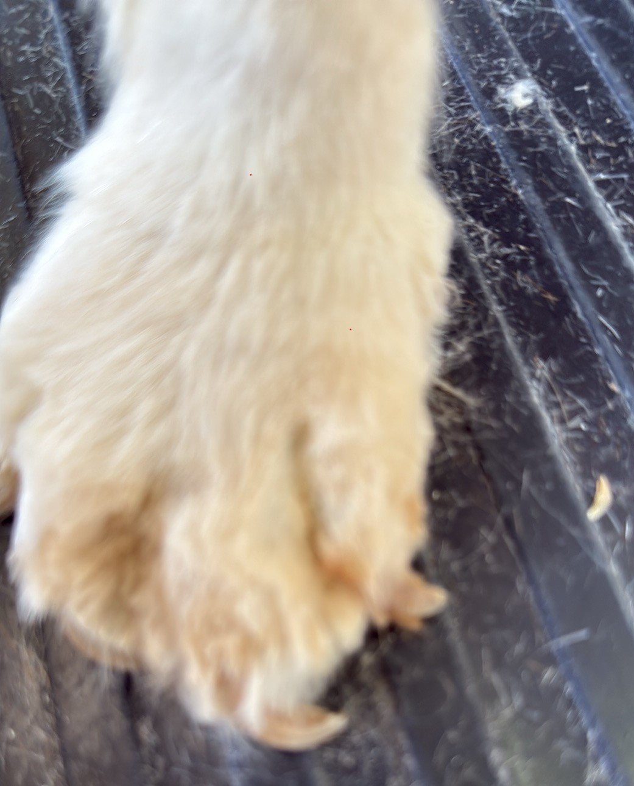

The best grooming result
needs 3 parties:
- The best groomer - you've chosen Sharon
- Preparation on your part
- Brush and comb your dog's coat.
- Do this weekly in between grooming sessions.
- For long-haired dogs, ave by gently easing out any tangles and knots.
- Do this daily
- Your dog. By having home grooming sessions, dogs become calmer for grooming. This means no sudden movements to interfere with the clippers or scissors.
How many ticks do you score?
Grooming problems for your dog (and your groomer)
Unless you start gentle grooming of your puppy at home as soon as you get them, most dogs will find grooming a stressful situation for the first 2 or 3 sessions.
Watch the following video of Sharon grooming a dog that has not been fully prepared.
As you can see from this video, there is a large amount of extra time and work involved in de-shedding a dog's coat. This is why de-shedding adds to the cost of grooming. (De-matting takes even longer!)
Avoid these problems - prepare!

A badly knotted coat
As you can see from the straggly ends, Sharon has had to clip this dog close to the skin.
For the poor dog, this means that they have been uncomfortable because of knots. It would have been cruel to have tried to untangle these knots.
A few minutes of light grooming each day could have avoided this.
Overly long toe nails
Look at the way this dog's toe nails are curling under.
They made it impossible for this dog to walk without pain.
Nail cutting is simple. Check the nails every 3 - 4 weeks and, if you can't cut them yourself, make an appointment with your vet.
If you take your dog for long daily waalks on concrete or asphalt, their nails will need clipping less frequently.
